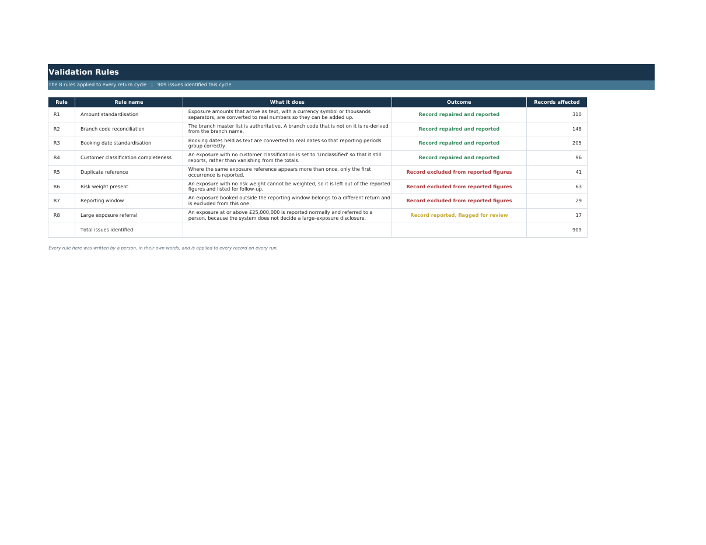

A demonstration · applied AI
Three pieces of real work, in three different trades. Messy information goes in, rules somebody wrote get applied, and out comes the format their organisation already expects. Press the button and watch one happen.
Whatever the trade, this work has the same five parts. Once you can see them you start spotting them in your own week, which is the only thing this page is for.

What you would need to bring. The work you already repeat, a few examples of it done properly, the software you already licence, and a person who can tell a right answer from a wrong one. That last one does not go away. Checking the output is the new job, and it is the part worth being clear about.
None of this is anyone's real data. Every firm, record and candidate here is invented, generated by code, and reproducible from a fixed starting number. We do not demonstrate on a client's material, and we will not ask for yours until there is an agreement.
These are recordings of runs that really happened, captured on 13 August 2026 by the same code that draws the live progress list. The stages, their order, the notes and the files are exactly what those runs produced. The pace is slowed so it can be read, and each demo states what the run really took. The page itself has no backend: it cannot execute anything and there is nowhere to upload a document to. That is deliberate.
Bring us the specific one, not the impressive one. Thirty minutes is usually enough to tell you honestly whether this is worth your time.
Book a conversation Send a message